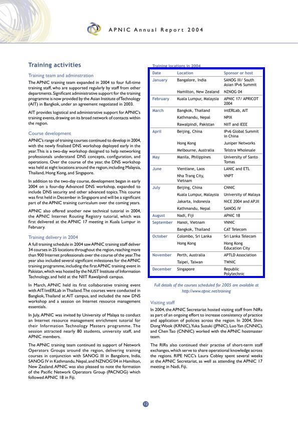
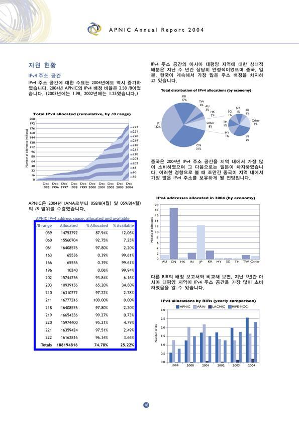
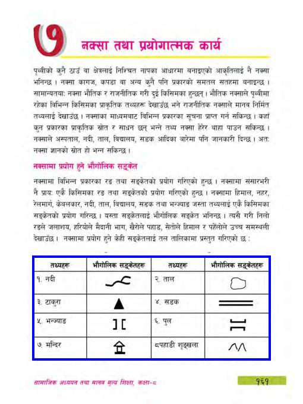
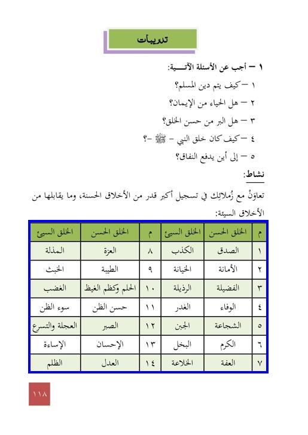
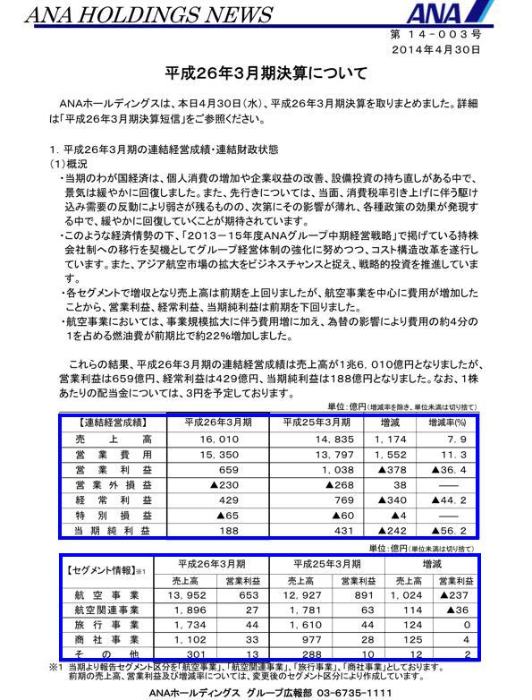
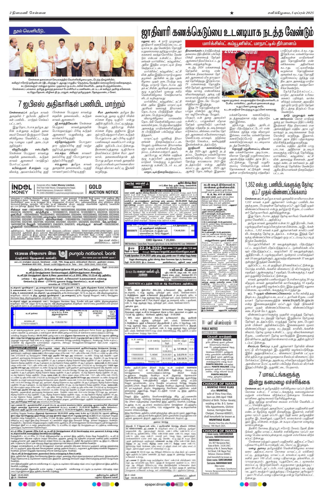
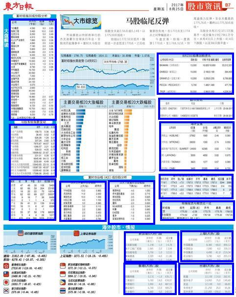
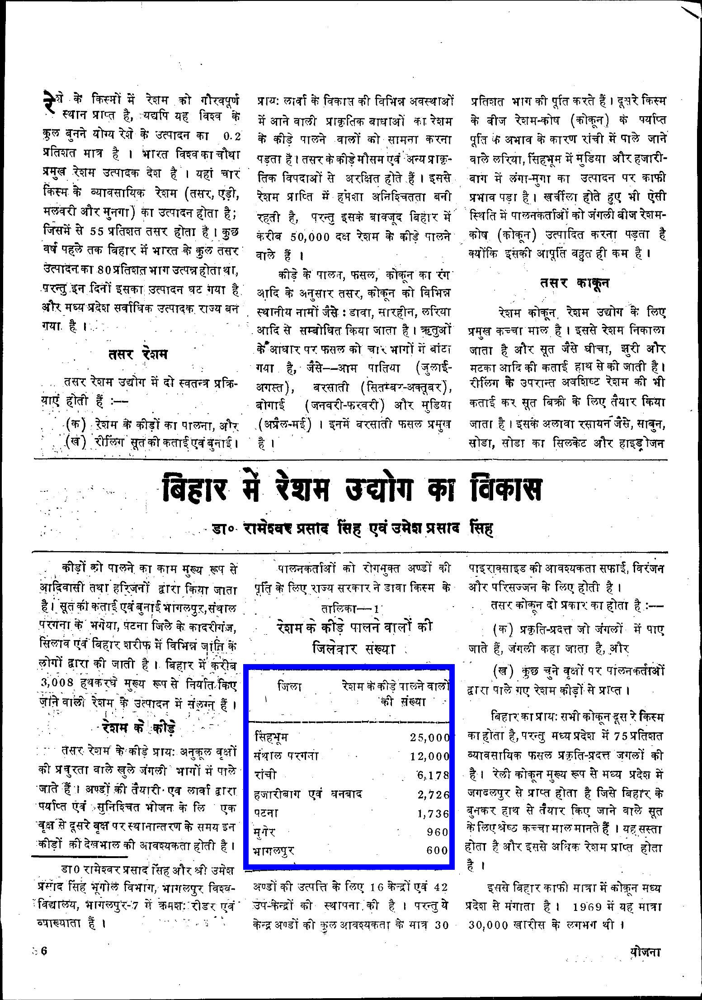

Tables play a key role in conveying structured data across documents. Accurate table detection is crucial for downstream tasks like structure recognition and information extraction. However, current datasets lack diversity in format, language, and layout, limiting real-world generalization. This underscores the need for well-annotated datasets that are multi-lingual, layout-diverse, document-agnostic, and format-rich.
To address these limitations, we introduce UniTabBank, a large scale, diverse table detection dataset designed to reflect realistic use cases. UniTabBank is characterized by five key attributes: (i) Multi-Lingual — supporting 28 languages (including Arabic, English, Hindi, etc.); (ii) Multi-Layout — encompassing both single-column and multi-column documents; (iii) Multi-Type — covering a wide range of document genres such as annual reports, books, newspapers, and magazines; (iv) Multi-Format — comprising scanned documents, photographed pages, and PDFs; and finally (v) Scale and Annotation Quality — consists of 55,443 document page images with 81,179 accurately annotated table instances, offering scale and annotation precision.
Additionally, we introduce UniTabDet, a YOLO-based model for table detection, which outperforms state-of-the-arts on eight out of nine table detection benchmarks. Cross-benchmark evaluation highlights the strong generalization capability of UniTabBank compared to existing benchmarks.
The UniTabBank dataset comprises a total of 55,443 document images, organized into four primary categories based on content and layout: Annual Report (55%), Book (21%), Magazine (17%), and Newspapers (5.3%). These document images are available in three formats: PDFs, photographed documents, and scanned documents. The dataset spans 28 languages, including Arabic, Assamese, Bengali, Bodo, Chinese, English, Farsi, French, Gujarati, Hindi, Indonesian, Japanese, Kannada, Korean, Malayalam, Manipuri, Marathi, Nepali, Oriya, Punjabi, Sanskrit, Sinhala, Spanish, Tamil, Telugu, Thai, Urdu, and Vietnamese. In total, the dataset contains 81,179 annotated table instances. Tables exhibit a wide variety of table layout structures, including (i) bordered tables with complete row and column separators, (ii) bordered tables without row and column separators, (iii) borderless tables with row and column separators, (iv) bordered tables with partial separators, (v) tables containing merged cells, and (vi) tables without merged cells.








Examples of complex document pages with annotated table bounding boxes with blue colored rectangles across different document formats, types, layouts, and languages.
| Dataset | #Image | #Instance | A.M | Format | Document Type | Language |
|---|---|---|---|---|---|---|
| ICDAR-2013 | 238 | 150 | Manual | PDF, Scanned | Government documents | English |
| ICDAR-2019 | 1,639 | 3,600 | Manual | PDF, Scanned | Books, Scientific journals, Forms, Financial statements | English |
| UNLV | 2,889 | 558 | Manual | Scanned | Technical reports, Magazines,Business letters, Newspapers | English |
| DeepFigures | 5.5M | 1.4M | Automatic | Research articles | English | |
| Marmot | 2000 | 958 | Semi-automatic | Books and Research articles | English, Chinese | |
| TNCR | 6,621 | 9,428 | Semi automatic | PDF, Scanned | - | English |
| STDW | 7,000 | 12,431 | Manual | Invoices, Research papers, Books | English, German,Japanese, Hindi, etc. | |
| ICT-TD | 5000 | - | Manual | ICT commodities | English | |
| TableBank | - | 417,234 | Automatic | Word and LaTeX documents | - | English, Chinese,Japanese, Arabic |
| PubTables-1M | 1M | 948K | Automatic | Scientific articles | English | |
| UniTabBank (ours) | 55,443 | 81,179 | Semi automatic | PDF, Scanned, Photographed | Annual reports, Books, Magazines, Newspapers | 28 languages — English, Arabic, Urdu, Hindi, etc. |
Shows table detection benchmark datasets along with UniTabBank. A.M. denotes the annotation mechanism.
| Training Set | Test Set | AP50 | AP75 | AP |
|---|---|---|---|---|
| PubTables | 0.994 | 0.994 | 0.989 | |
| TableBank | 0.863 | 0.734 | 0.665 | |
| UniTabBank | PubTables | 0.993 | 0.947 | 0.826 |
| ICT-TD | 0.981 | 0.933 | 0.828 | |
| TNCR | 0.985 | 0.916 | 0.810 | |
| ICDAR-2019 | 0.985 | 0.924 | 0.821 | |
| PubTables | 0.840 | 0.719 | 0.606 | |
| TableBank | 0.980 | 0.973 | 0.958 | |
| UniTabBank | TableBank | 0.933 | 0.921 | 0.899 |
| ICT-TD | 0.921 | 0.898 | 0.865 | |
| TNCR | 0.916 | 0.895 | 0.871 | |
| ICDAR-2019 | 0.916 | 0.893 | 0.859 | |
| PubTables | 0.601 | 0.528 | 0.441 | |
| TableBank | 0.762 | 0.717 | 0.684 | |
| UniTabBank | UniTabBank | 0.990 | 0.986 | 0.972 |
| ICT-TD | 0.890 | 0.852 | 0.819 | |
| TNCR | 0.869 | 0.823 | 0.797 | |
| ICDAR-2019 | 0.893 | 0.853 | 0.818 | |
| PubTables | 0.604 | 0.498 | 0.417 | |
| TableBank | 0.391 | 0.314 | 0.288 | |
| UniTabBank | UNLV | 0.914 | 0.854 | 0.773 |
| ICT-TD | 0.663 | 0.568 | 0.500 | |
| TNCR | 0.806 | 0.723 | 0.635 | |
| ICDAR-2019 | 0.729 | 0.653 | 0.568 | |
| PubTables | 0.699 | 0.594 | 0.519 | |
| TableBank | 0.675 | 0.642 | 0.632 | |
| UniTabBank | STDW | 0.964 | 0.949 | 0.928 |
| ICT-TD | 0.926 | 0.895 | 0.875 | |
| TNCR | 0.888 | 0.853 | 0.830 | |
| ICDAR-2019 | 0.929 | 0.897 | 0.879 | |
Cross-benchmark evaluation of UniTabDet trained on different datasets and tested across multiple benchmarks. Models trained on benchmark-specific datasets achieve high in-domain accuracy but generalize poorly, whereas the models trained with UniTabBank achieve consistently strong cross-domain performance. Bold and underlined values represent the best and second best results, respectively.
| Method | Train | Test: TableBank | |||
|---|---|---|---|---|---|
| Dataset | #Image | P | R | F1 | |
| Li et al. | TableBank | 260,582 | 0.966 | 0.899 | 0.931 |
| CTabNet | TableBank | 260,582 | 0.929 | 0.957 | 0.943 |
| CDeC-Net | TableBank | 260,582 | 0.934 | 0.924 | 0.929 |
| UniTabDet | UniTabBank | 55,443 | 0.909 | 0.965 | 0.936 |
| UniTabDet† | TableBank | 20,000 | 0.949 | 0.979 | 0.964 |
Table: Performance evaluation on TableBank using precision (P), recall (R), and F1 score at IoU = 0.5. † Model fine-tuned on 20K samples from TableBank. Bold = best, Underline = second-best.
| Model | Train | Test: PubTables | |||
|---|---|---|---|---|---|
| Dataset | #Image | AP50 | AP75 | AP | |
| Table-Transformer | PubTables | 460,589 | 0.995 | 0.989 | 0.970 |
| TabSniper | BankTabNet | 9,724 | 0.939 | 0.906 | 0.852 |
| ClusterTabNet | PubTables | 460,589 | 0.990 | - | 0.989 |
| UniTabDet | UniTabBank | 55,443 | 0.993 | 0.947 | 0.826 |
| UniTabDet† | PubTables | 20,000 | 0.995 | 0.995 | 0.994 |
Table: Performance evaluation on PubTables-1M using object detection metrics. † Model fine-tuned on PubTables-1M. Bold = best, Underline = second-best.
| Model | AP50 | AP75 | AP |
|---|---|---|---|
| DocLayOut | 0.983 | 0.981 | 0.967 |
| TATR | 0.919 | 0.813 | 0.749 |
| SparseTableDet | 0.927 | 0.8992 | 0.874 |
| Mask R-CNN | 0.901 | 0.785 | 0.698 |
| UniTabDet | 0.990 | 0.986 | 0.972 |
Table: Comparison of UniTabDet with DocLayOut, TATR, SparseTableDet, and Mask R-CNN on UniTabBank. Bold = best, Underline = second-best.
| Model | #Parameters (M) | AP50 | AP75 | AP |
|---|---|---|---|---|
| UniTabDet (n) | 2.6 | 0.9895 | 0.9848 | 0.9672 |
| UniTabDet (s) | 9.4 | 0.9894 | 0.9852 | 0.9676 |
| UniTabDet (m) | 20.1 | 0.9895 | 0.9852 | 0.9704 |
| UniTabDet (l) | 25.3 | 0.9897 | 0.9854 | 0.9709 |
| UniTabDet (x) | 56.9 | 0.9902 | 0.9857 | 0.9719 |
Table: Performance comparison on UniTabBank using UniTabDet model variants (n/s/m/l/x = tiny → extra-large).
| Model | Blur | AP50 | AP75 | AP |
|---|---|---|---|---|
| UniTabDetα | Gaussian | 0.9890 | 0.9834 | 0.9620 |
| UniTabDetβ | Median | 0.9837 | 0.9718 | 0.9442 |
| UniTabDetγ | Average | 0.9800 | 0.9684 | 0.9371 |
| UniTabDet | - | 0.9902 | 0.9857 | 0.9719 |
Table: Performance comparison between the original UniTabDet and blurred variants on UniTabBank.
@inproceedings{mondal2026unitabbank,
author = {Ajoy Mondal, Saumya Mundra, Avijit Dasgupta, C. V. Jawahar},
title = {UniTabBank: A Large Scale Multi-Lingual, Multi-Layout, Multi-Type, Multi-Format Dataset for Table Detection},
booktitle = {WACV},
year = {2026},
}